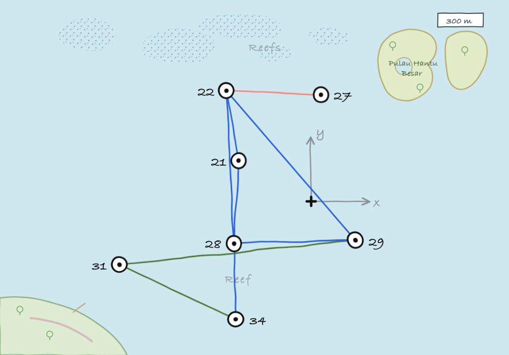

> addroute 31, 28
OK
> addroute 34, 28
OK
> routes
uuid to nextHop link reliability hops dataRate metric enabled auto poll
------------------------------------------------------------------------------------------
sxhzjt 31 28 uwlink true 0 965 3.0 true true 0.0
myoez3 34 28 uwlink true 0 965 3.0 true true 0.06 Routing in larger networks
6.1 MISSION 2013 network
The MISSION 2013 experiment in Singapore featured a 7-node network that was deployed at sea for several weeks. The network operated in a challenging area with complex 3D bathymetry, several reefs and heavy shipping. During the experiment, we transmitted more than 40,000 frames of data and collected statistics on communication performance across various links in the network. These performance statistics are embedded in the Mission2013a channel model in UnetStack. We use a simulated version of the MISSION 2013 network to learn how to set up and operate larger networks that require routing.

To start the simulated network, we simply run the mission2013-network.groovy simulation script:
$ bin/unet samples/mission2013-network.groovy
MISSION 2013 network
--------------------
Node 21: tcp://localhost:1121, http://localhost:8021/
Node 22: tcp://localhost:1122, http://localhost:8022/
Node 27: tcp://localhost:1127, http://localhost:8027/
Node 28: tcp://localhost:1128, http://localhost:8028/
Node 29: tcp://localhost:1129, http://localhost:8029/
Node 31: tcp://localhost:1131, http://localhost:8031/
Node 34: tcp://localhost:1134, http://localhost:8034/While the MISSION 2013 network is not physically very large (only about 1.5 km across), the challenging environment kept the network from being fully connected, i.e., not all nodes could directly communicate with all others. The average frame delivery ratio (number of successfully delivered frames / number of transmitted frames) on each link is shown below. The link quality is also shown on the map above, with dark blue links being the good ones, dark green ones being the weak ones, and the brownish one being the very poor link.
| To → From ↓ |
21 |
22 |
27 |
28 |
29 |
31 |
34 |
|---|---|---|---|---|---|---|---|
| 21 | - | 0.926 | 0.266 | 0.917 | 0.912 | 0.000 | 0.552 |
| 22 | 0.867 | - | 0.471 | 0.751 | 0.850 | 0.000 | 0.288 |
| 27 | 0.359 | 0.381 | - | 0.313 | 0.322 | 0.000 | 0.000 |
| 28 | 0.847 | 0.869 | 0.390 | - | 0.845 | 0.925 | 0.863 |
| 29 | 0.539 | 0.693 | 0.333 | 0.688 | - | 0.374 | 0.000 |
| 31 | 0.000 | 0.000 | 0.000 | 0.902 | 0.805 | - | 0.795 |
| 34 | 0.236 | 0.436 | 0.000 | 0.684 | 0.000 | 0.544 | - |
Note that the links are not symmetric. This is common in cases where local conditions (like ambient noise at noisy reefs) affect link performance in a non-reciprocal way.
6.2 Connectivity without routing
During the MISSION 2013 experiment, node 21 was a gateway node with surface expression and connectivity to the Internet (via a 3G cellular network). All other nodes were on the seabed and not directly accessible. So let us start by exploring the connectivity from node 21 to other nodes:
> ping 22
PING 22
Response from 22: seq=0 rthops=2 time=2892 ms
Response from 22: seq=1 rthops=2 time=2912 ms
Response from 22: seq=2 rthops=2 time=3143 ms
3 packets transmitted, 3 packets received, 0% packet loss
> ping 27
PING 27
Request timeout for seq 0
Request timeout for seq 1
Response from 27: seq=2 rthops=2 time=11075 ms
3 packets transmitted, 1 packets received, 67% packet loss
> ping 28
PING 28
Response from 28: seq=0 rthops=2 time=2952 ms
Response from 28: seq=1 rthops=2 time=3110 ms
Response from 28: seq=2 rthops=2 time=3031 ms
3 packets transmitted, 3 packets received, 0% packet loss
> ping 29
PING 29
Response from 29: seq=0 rthops=2 time=3355 ms
Response from 29: seq=1 rthops=2 time=18720 ms
Request timeout for seq 2
3 packets transmitted, 2 packets received, 33% packet loss
> ping 31
PING 31
Request timeout for seq 0
Request timeout for seq 1
Request timeout for seq 2
3 packets transmitted, 0 packets received, 100% packet loss
> ping 34
PING 34
Request timeout for seq 0
Response from 34: seq=1 rthops=2 time=3294 ms
Response from 34: seq=2 rthops=2 time=3434 ms
3 packets transmitted, 2 packets received, 33% packet lossWe see that the connectivity to nodes 22 and 28 is good, that to nodes 29 and 34 is poorer, and to nodes 27 and 31 is non-existent. Since the simulation is probabilistic, your exact results may differ.
6.3 Static routing
From the table above, we see that node 28 has good connectivity to nodes 31 and 34, so perhaps we could relay datagrams via node 28. Let us set up the following routes:
- Relay data between nodes 21 and 31 via node 28
- Relay data between nodes 21 and 34 via node 28
On node 21, we add routes to nodes 31 and 34:
On nodes 31 and 34, we add routes to node 21 via node 28 and enable remote access:
> addroute 21, 28
OK
> remote.enable = true
trueNow, we can check the connectivity from node 21 to nodes 31 and 34 again:
> ping 31
PING 31
Response from 31: seq=0 rthops=4 time=18930 ms
Response from 31: seq=1 rthops=4 time=10680 ms
Response from 31: seq=2 rthops=4 time=46139 ms
3 packets transmitted, 3 packets received, 0% packet loss
> ping 34
PING 34
Response from 34: seq=0 rthops=4 time=26760 ms
Response from 34: seq=1 rthops=4 time=34408 ms
Response from 34: seq=2 rthops=4 time=21660 ms
3 packets transmitted, 3 packets received, 0% packet lossMuch better!
We can ask the routing agent for a trace to check what route the datagram to node 31 took:
> trace 31
[21, 28, 31, 28, 21]This shows that the datagram originated at node 21, passed through node 28 before reaching node 31. Then on the way back, it passed through node 28 again, and reached us back at node 21.
Let us next try to do something using the routes we created. We can get node 21 to ask node 31 to measure the range to node 28 and report it to us. This request will be relayed via node 28, since our routing tables are set up to do so. Remember to set remote.enable = true on node 31 before making the request from node 21:
> rsh 31, 'range 28'
OK
[31]: 873.676.4 Route discovery
In the previous section, we learned how to set up static routes manually. But what if we are too lazy to determine the routes manually? Or if we don’t have access to the nodes on the seabed to set up routes? We can use the route discovery agent to populate the routing tables.
To see how to do this, let us restart our MISSION 2013 simulation so that the routing tables are empty (alternatively we can remove the routes we created earlier by typing delroutes on nodes 21, 31 and 34). We can verify that the routing table is indeed empty:
> routes
No routesNow on node 21, start a route discovery to node 31:
> rreq 31
OKPatiently wait for a minute or two before checking the routing table on node 21:
> routes
uuid to nextHop link reliability hops dataRate metric enabled auto poll
------------------------------------------------------------------------------------------
4v7vc1 28 28 uwlink true 1 965 3.0 true true 0.0
ee1o4q 31 28 uwlink true 2 965 -7.0 true true 0.0
n9b31n 29 29 uwlink true 1 965 3.0 true true 0.0
l90nr8 22 22 uwlink true 1 965 3.0 true true 0.0
gj4st0 27 27 uwlink true 1 965 3.0 true true 0.0
u8ce7z 31 29 uwlink true 2 965 -7.0 true true 0.0Your routing table may differ, as the route discovery process is probabilistic. We see that we now have a route to node 31 via node 28.
Let us check the routing table on node 31 as well, to see if it has a corresponding entry for a route to node 21:
> routes
uuid to nextHop link reliability hops dataRate metric enabled auto poll
------------------------------------------------------------------------------------------
yr54iu 28 28 uwlink true 1 965 3.0 true true 0.0
accz6f 21 28 uwlink true 2 965 -7.0 true true 0.0
1n6ztk 29 29 uwlink true 1 965 3.0 true true 0.0
rl518l 21 29 uwlink true 3 965 -7.0 true true 0.0
ib2xk2 34 34 uwlink true 1 965 3.0 true true 0.0
gqhzeo 21 34 uwlink true 3 965 -7.0 true true 0.0Indeed it does!
We can verify the routes by issuing a trace from node 21:
> ping 31,1
PING 31
Response from 31: seq=1 time=11588 ms
1 packets transmitted, 1 packets received, 0% packet loss
> trace 31
[21, 28, 31, 28, 21]Since the route discovery process is probabilistic, it may be useful to repeat the route discovery if good routes are not established after a single try. The rreq command can also be called with parameters to control the repetition. For example rreq 31, 3, 6, 30 will initiate 6 route discoveries to node 31 looking for up to 3-hop routes spaced by 30 seconds between discoveries.